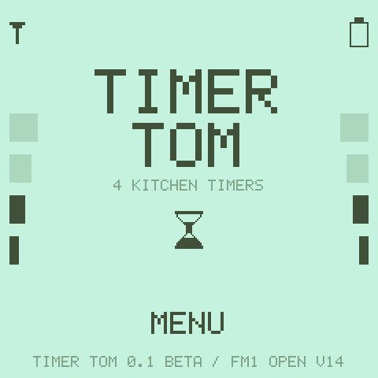
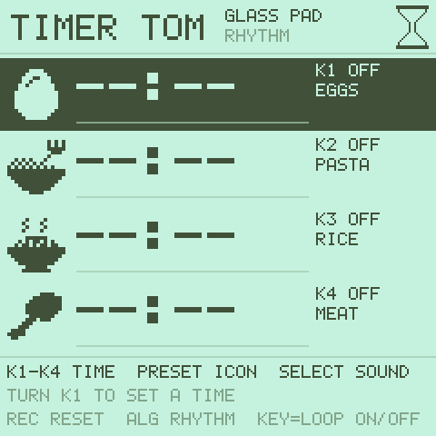
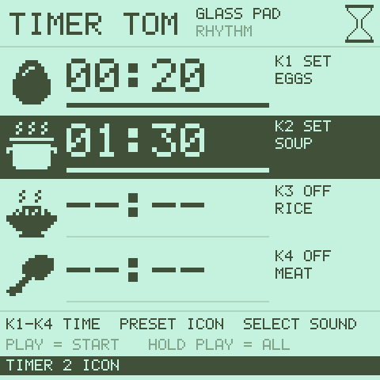
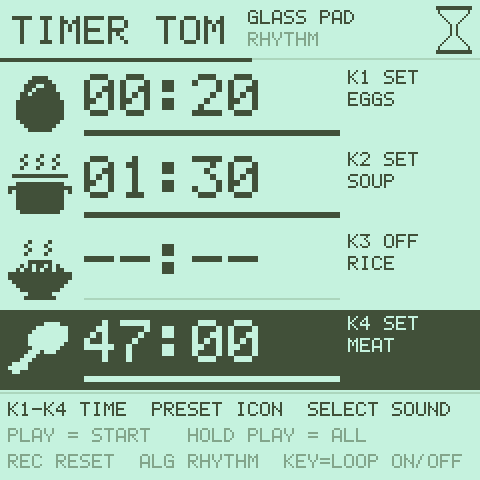
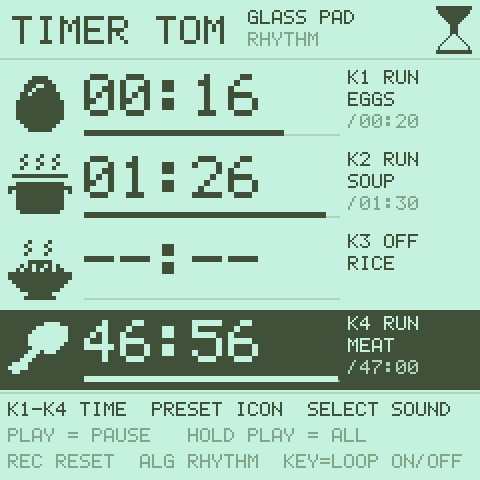
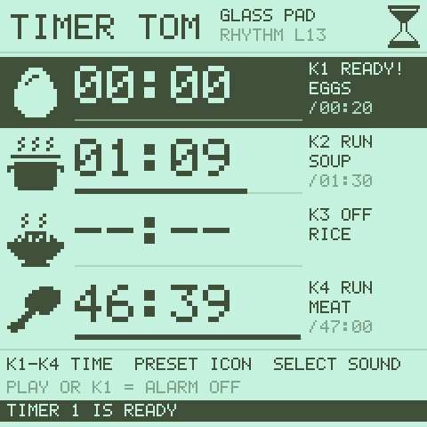
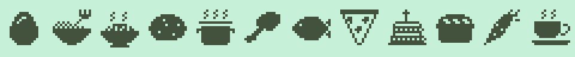

What's inside
One page, always on screen: all four timers, their dishes, what is left and which knobs and buttons do what right now.
Four timers
K1–K4 set timers 1–4, up to 4 hours. Steps grow with the time: 5 s, 15 s, 30 s, 1 min, 5 min.
Twelve dishes
PRESETS picks the icon of the active timer: eggs, pasta, rice, potato, soup, meat, fish, pizza, cake, bread, veg, tea.
Start one or all
PLAY starts or pauses the active timer. Hold PLAY to start every timer that is set.
Hourglass lights
Black keys are the upper bulb, white keys the lower one. Every second a grain falls from the middle black key to the middle white key.
One drum per timer
Start timer 1 and a soft kick plays; timer 2 adds an open hat, 3 a rim with dub echo, 4 a shaker. Blurred with reverb, 118 BPM. Or a plain soft tick, on ALGORITHM.
27 calm key loops
Every key starts its own slow four-bar loop of long pad notes, all in one gentle key; the same key or HOME stops it. After about half a minute it moves on to the next key by itself.
Gentle alarm
A ready timer chimes a short kalimba motif of its own, so you can hear which dish is done. Its row blinks.
Hints on screen
The three bottom lines always say which knobs and buttons work and what PLAY will do next.
Phone-style screen
The two-tone LCD look of DAW DANNY and DRUM PETER. No logos.
Screens
Every picture is rendered by the firmware's own screen code in the host test.







Controls
| Control | Action |
|---|---|
| K1–K4 | Set timer 1–4 and make it the active timer. A running, paused or ringing timer is only selected by the first click, so it is never changed by accident. Turning it further changes the time left. |
| PRESETS | Icon of the active timer (12 dishes) |
| PLAY | Start / pause the active timer; on a ready timer: alarm off |
| PLAY held | All alarms off, or start every set timer, or pause all running ones |
| REC | Reset the active timer to its time; press again to clear it |
| SELECT | Sound of the loops: glass pad, strings, warm pad, choir |
| ALGORITHM | SILENT, TICK 1, TICK 2, RHYTHM (one drum per running timer) |
| Keys | Start that key's loop; the same key stops it. After four rounds it moves to the next key |
| HOME | Stop the loop |
| OCT − / OCT + | Transpose the loop (−2 … +2 octaves) |
| HOME + PLAY | Stop all sounds |
Lights
| Light | Rhythm | Means |
|---|---|---|
| Black keys | lit from the middle out | sand left in the upper bulb of the first timer to end |
| White keys | lit from the middle out | sand already in the lower bulb |
| Middle black → middle white key | every beat (RHYTHM) or second (TICK) | a grain falls |
| Loop key | twice a second | this key's loop is playing |
| All keys | white / black swap 4× a second | a timer is ready |
| PLAY | half of every second | timers run (blinks fast while a timer is ready) |
| REC | steady | the active timer can be reset |
| OCT − / + | steady | keys shifted down / up |
Install in five minutes
In desktop Chrome or Edge, over USB. The original V15 firmware is inside the installer, so you can always go back.
Back up
Export the projects, voices and samples you want to keep.
Connect
Switch the FM-1 on and plug it straight into the computer with a USB data cable.
Install
Open the installer page, press START and follow it. Coming from stock V15, enable force flash once.
Cook
The FM-1 restarts into Timer Tom. Turn K1, press PLAY.
Good to know
Timers live in memory
Timers are not saved. Switching off the FM-1 clears them, like any kitchen timer without batteries.
Sound engine
Loops and the alarm are DX7 voices of M-VAVE's FM1 Open V14 library, played by its own sequencer; the groove is one track of its 808 with a drum lane per timer, the tick its rimshot. Tracks 5–8 are off.
Lights are on or off
The panel cannot dim a light, so the hourglass is drawn with how many keys are lit and with a moving grain.
Not a safety device
Use it for cooking, not for anything where a missed alarm could hurt someone. Keep the FM-1 powered while timers run.